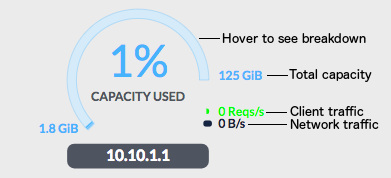

Cockroaches first evolved more than 300M years ago, and they haven’t changed enough that the O.G. is now unrecognizable. “Modern” cockroaches are about 200M years old; that they’re still with us, largely unchanged, is quite impressive from an evolutionary perspective.
Meanwhile, everything seems to be evolving at lightspeed in our industry. The growth of the public cloud has prompted technology investments that have resulted in a new wave of advanced orchestration capabilities (e.g. Cloud Foundry, Mesosphere, Docker, Kubernetes, etc). That these capabilities bring Google-like power to operations is no accident – they were largely inspired or even created by Google. Their aim is simple: realize the efficiencies available using the public cloud by coherently managing the lifecycles of hundreds or thousands of VMs to deploy microservices. The public cloud provides the extremely low-friction resources; the orchestration layer provides the control surface.
To date, Kubernetes has made running instances of stateless application logic simple. It essentially boils down to packaging the application logic into a Docker image and instructing Kubernetes to schedule N instances behind a load balancer (I’m going to use Kubernetes generically from here on out). It sounds simple, but the combination of technologies are together accomplishing a number of tasks which used to require truly significant fixed R&D and variable opex costs.
Unless your next project is an online calculator, there is no point in building a stateless application. The gaping hole in the Kubernetes story has been, and remains, state. Companies looking to re-architect and re-deploy with Kubernetes can stride into the future with one foot (application microservices), while the other (storage systems) remains stuck in the past. Existing monolithic database technologies like Oracle, MySQL and Postgres can certainly be scheduled using Kubernetes, but that misses the point. They’re unable to take advantage of the benefits inherent in the very idea of “the cloud”. It’s like casting pearls before swine, no offense to MySQL or Postgres.
What do I mean by using the inherent benefits of the cloud? It’s simple really: cloud-native databases can leverage the ability to quickly schedule resources within a facility, but also across facilities, cloud service providers, and even continents. This can allow them to provide scale, unmatched resilience, low-latency global operation, and data sovereignty compliance. Monolithic databases remain useful pieces of technology, but because they require scaling up just one master node, they are evolutionary dead ends. They are the products of a smaller, less connected era, and their shortcomings risk becoming liabilities for your business as it evolves.
CockroachDB takes advantage of cloud resources to let your business evolve gracefully as it grows, without requiring a re-architecture or significant migration. It scales elastically using commodity resources, has integral high availability, can geographically replicate data for global access, provides an industry-standard SQL API, and deploys as easily with Kubernetes as your stateless microservices. That might just sound like a lot of gobbledygook; it’s not. These are vital capabilities, and I’m going to try to make them more concrete in the remainder of this post.
I’ve created a D3 simulation which illustrates how CockroachDB can be deployed as the central OLTP component of your company’s data architecture, no matter which stage you’re at. There are five deployments shown here, and in most cases, the simulation illustrates a transition from one stage to the next.
You've got to start somewhere. And that's actually a significant problem with some cloud DBaaS offerings. CockroachDB is open source and runs on MacOS, Linux, and Windows, so development on a laptop is simple and expedient. You can easily setup local clusters too, using the roachdemo tool. If you're developing microservices using go, you can spin up ephemeral CockroachDB clusters in unittests using testserver.
The first time CockroachDB is deployed to the cloud, it might be started as a single node. However, a singular benefit of CockroachDB is that it's inherently highly available (HA), requiring no complex configuration or third-party failover mechanism to replicate and remain available in the event of node failure. It just needs additional nodes to join the cluster. But a highly available database with a symmetric, shared-nothing architecture isn't just for resilience in the face of unplanned failures. It's a crucial enabler for prosaic administrative tasks like zero-downtime upgrades and VM rescheduling.
CockroachDB uses the Raft consensus protocol to consistently replicate data between nodes. Table data is split into segments of contiguous key space (ordered by primary key), internally called "ranges". Each range runs its own Raft algorithm to replicate and repair the data it contains. If you'd like a more sophisticated explanation, there's more detail available here. In the simulations below, each range is visually depicted by a vertical stack of three replicas (replicas are visually depicted as boxes).
Before we get started, you might be wondering about the figures in the simulation diagrams on this page. Here's a quick legend.
Each of the circular figures represent either a single node or a collection of nodes. If labeled as an internal IP address (e.g. "10.10.1.1"), they are a single node. Otherwise, they represent a collection of nodes, either as a facility (e.g. "New York City") or even multiple facilities within a region (e.g. "United States"). Facilities and regions may be clicked to expand the facilities or nodes they contain. Use the escape key or the browser's back button to zoom back out. Hovering over the outside of the capacity gauge expands it so that you can view a pie-chart showing the breakdown of space used between four database tables: Registration, Products, Orders, and Details. Hover over the direct center to see network links (note that this only works if there's more than one node shown).
You can put a lot of data on a server these days, but big and monolithic is only the way people are used to running databases. You wouldn't deploy your application logic on a solitary, scaled-up server because you'd want to avoid a single point of failure, and you'd want the option to scale beyond even the largest monolithic server. You'd also want to minimize any disruption to client load in the event of node loss.
The same principles apply to your database, only more so. A typical disruption to a monolithic database is total (as experienced by connected clients), and can have long recovery time objectives, even with sophisticated failover mechanisms. Worse, monolithic architectures, even when configured with active/passive or active/active repliction, can have a non-zero recovery point objective, meaning there could be data loss.
When a CockroachDB node experiences failure, the entire aggregate bandwidth of the cluster is used to up-replicate the missing data. This same mechanism is used to rebalance data as new nodes are added to a cluster. In the simulation below, the original three node cluster is scaled by adding five additional nodes.
Note that the capacity of each node in this example has been reduced to more clearly illustrate relative fullness and iterative rebalancing.
You have a fast-growing business and CockroachDB has allowed you to scale within your primary datacenter (in this example, it's located in New York City). Whether your business is B2C and you've reached critical mass, or B2B and you've landed some big enterprise customers, at some point the pressures on your data architecture will again expand. This time, with more stringent requirements around service level agreements. In other words, you really can't allow the system to go down because of a facility outage.
To accomplish this, data must be replicated not just within a facility, but across facilities. You need some level of geo-replication. There is a cost to geo-replication, especially when done with quorum-based replication (like Raft). The cost you pay is latency, because for a write to become permanent, a majority of replication sites must acknowledge it. This means that writes have a minimum latency equal to the second slowest communication link between replication sites (in the case of three replicas). In practice, you want to choose facilities which are relatively close: within 30ms of each other, but probably not across the globe. However, you also want to balance proximity with geo-diversity, such that you minimize correlated failures (i.e. avoid doubling up on power sources or fiber backbones).
Your business has grown to the point where you must service customers internationally. These days, this situation can just as easily apply to a fast-growing startup company as a multi-national enterprise. How do you solve the thorny issues around latency and data sovereignty? The old way of doing things was to run a primary facility on the East Coast of the United States, with a secondary facility ready as a hot standby. But customers, whether they're individual consumers of your online game, or other companies using your SaaS offering, are becoming less satisfied with the status quo. The two big challenges which need to be solved are service latency and customer data domiciling preferences.
With the EU's GDPR regulations coming into effect in May of 2018, and many other countries following suit, personal data privacy is an issue whose time has come. In particular, companies must get a very explicit consent from a customer when personal data will leave their jurisdiction for processing or storage. Companies that fail to provide for local data domiciling can expect hefty fines, the loss of their customers, or both.
One solution is to break up your global service into individual regional services, but this is expensive operationally and greatly compounds complexity for your application developers. Your customers likely still expect you to be providing a global service. They move, they interact with other customers across regions. These are difficult problems to solve at the application layer.
Enter geopartioning. Database partioning isn't a new concept. RDBMSs like Oracle, SQLServer, and Postgres allow you to partition tables, mostly in order to manage the size of active data so that it can be quickly restored. CockroachDB has from the first version been able to replicate different databases or tables to different replication sites within a cluster. Geopartitioning allows row-level control of replication. So, for example, a table might be partitioned based on its "region" column, containing values like "us-ca", "eu-de", "eu-fr", and "cn-bj". Any rows with region="eu-de" might be replicated within a facility in Germany, or across three facility in Germany, whereas rows with region="cn-bj" might be replicated to three facility near Beijing, or even across China.